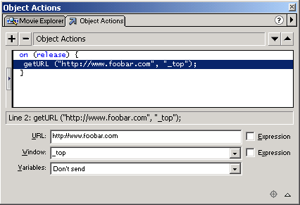

|
After adding a Flash banner, you will probably notice phpAdsNew won't
log AdClicks for that banner. This is normal behavoir. Usually the target
URLs are hardcoded in the Flash banner and if the user clicks on the banner
it the Flash player will tell the browser to visit the hardcoded URL directly.
An example of an hardcoded URL in Flash 5:

ActionScript variables
To solve this problem we need to tell the Flash player to use the adclick.php
file instead of the hardcoded URL. One way to achieve this effect is to
replace the hardcoded URL with a specific ActionScript variable, but this
is only possible if you have access to the original Flash movie source.
In the example below the hardcoded URL is replaced with an ActionScript
variable called 'targeturl'.
phpAdsNew will give the Flash player the correct value for the 'targeturl'
ActionScript variable during invocation. The 'targeturl' ActionScript
variable will contain the URL which is needed for logging clicks and will
redirect to the url specified in the 'Linked to URL'
field in the Admin Interface.

|